Character page – drafts A, B, C (#104), inside navigation D (#92)
Text: agents/research/CHARACTER-PAGE.md. Each draft's HTML takes #list, #char and on phones #char-sheet / #char-press. Pictures at 1440 × 900 and 390 × 844 with the local media copy.
A – list column + the character with section tabs
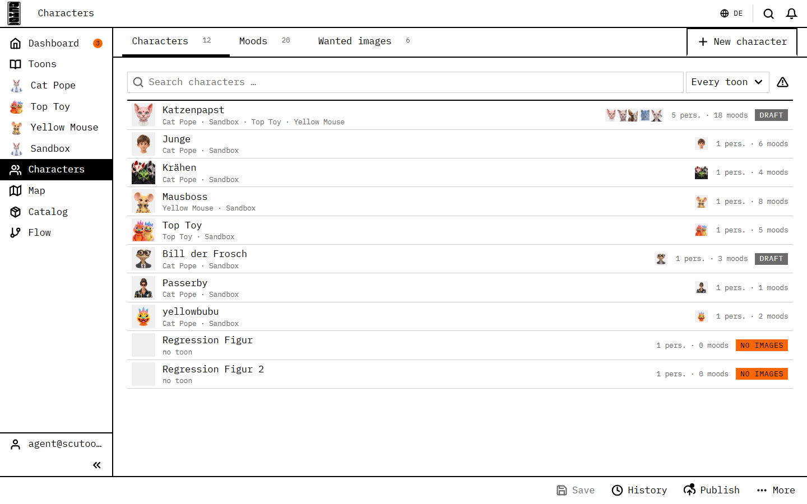
overview: a table of characters
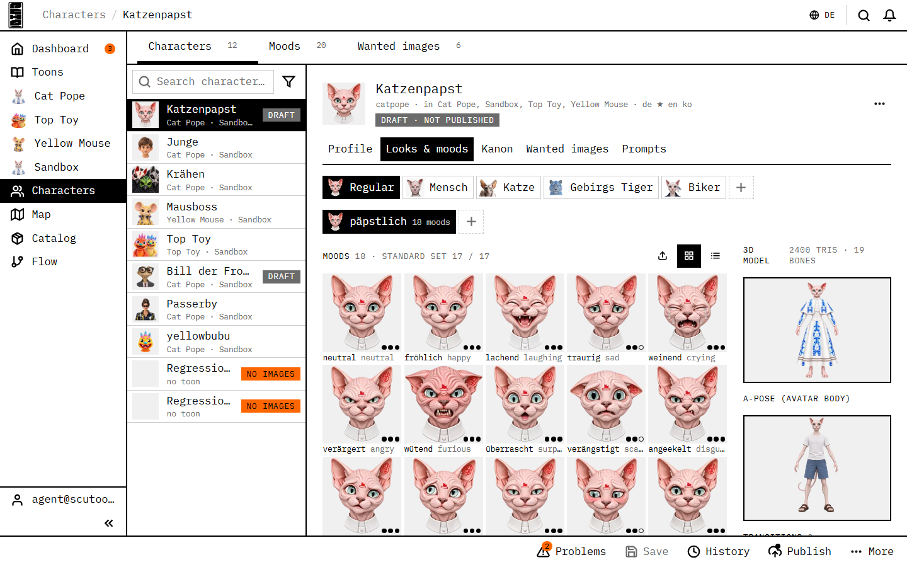
a character: list | Profile · Looks & moods · Kanon · Wanted · Prompts
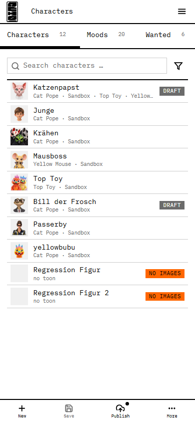
list
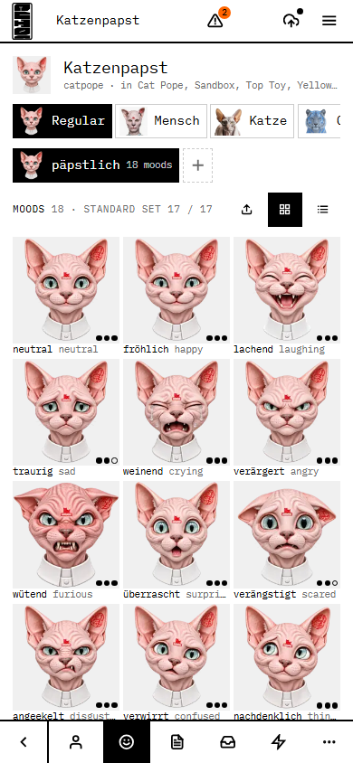
Looks & moods
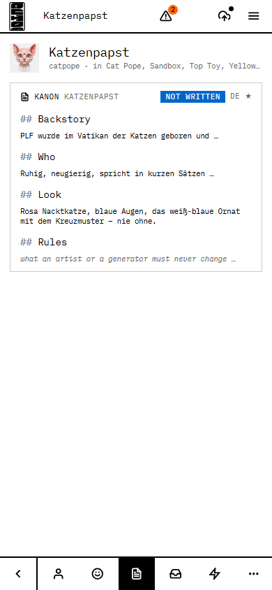
Kanon (bottom row)
B – gallery + the character's own tree (recommended)
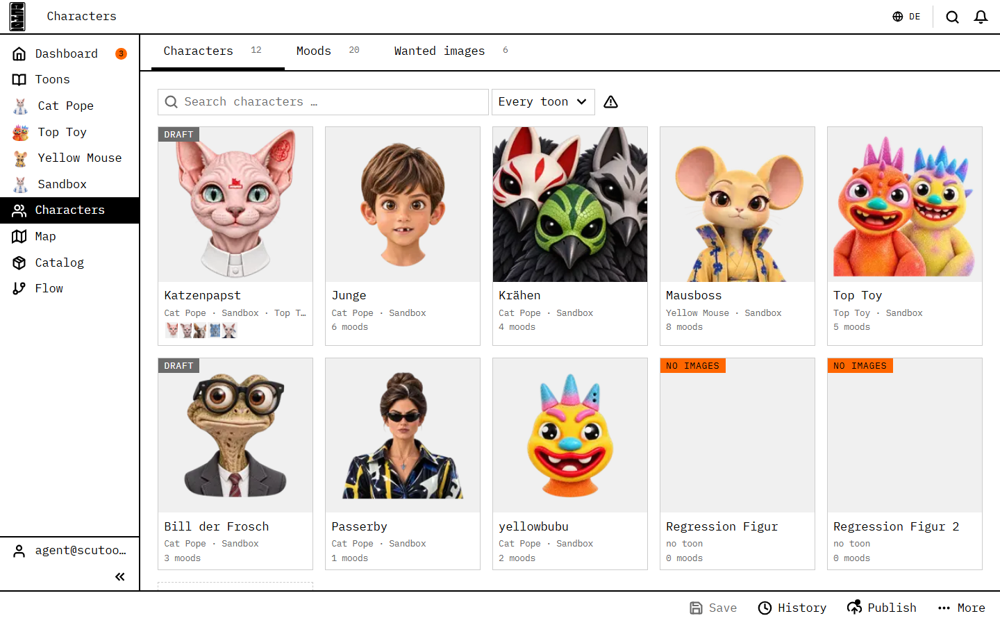
overview: cards
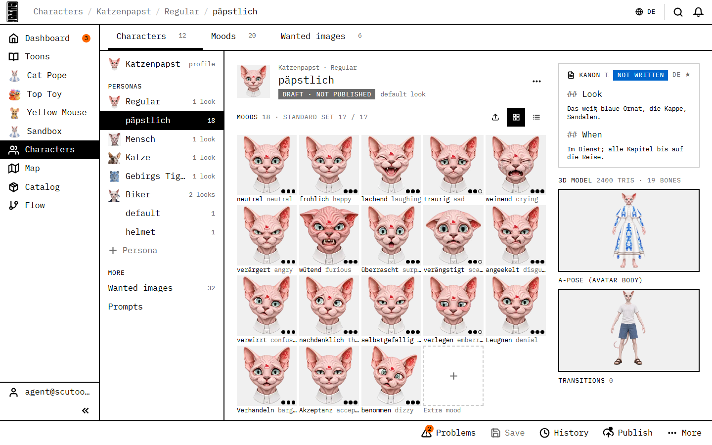
a look open: tree | moods | Kanon + model + A-pose
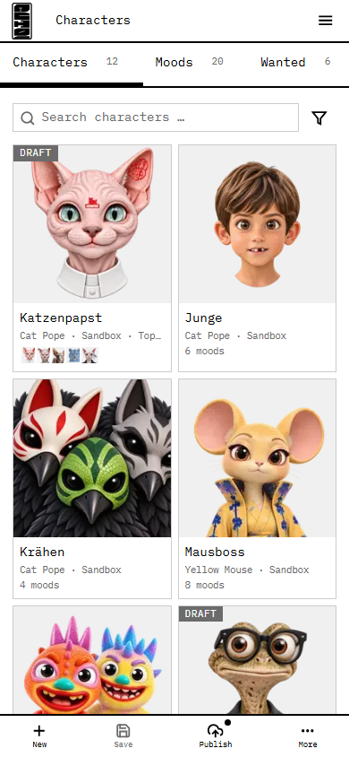
cards
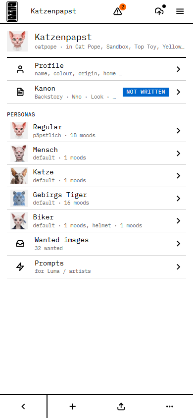
the character = its tree
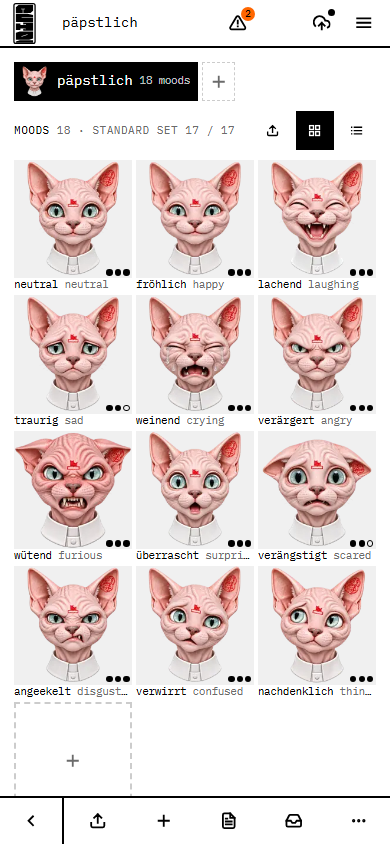
a look
C – stage + inspector (like the slice editor)
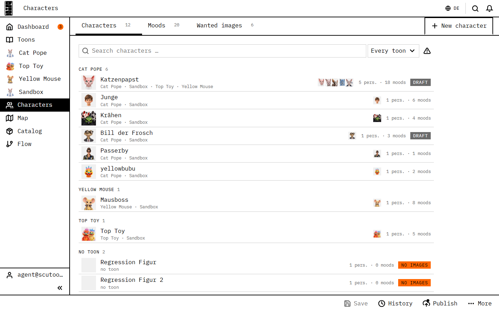
overview: grouped by toon
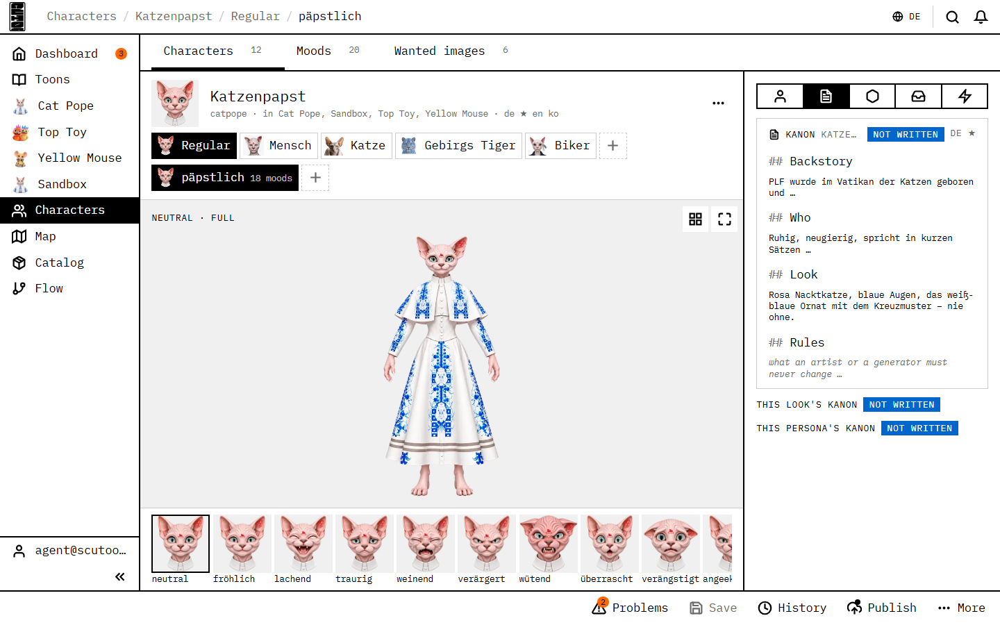
the figure on a stage, moods as a strip, the inspector docked right